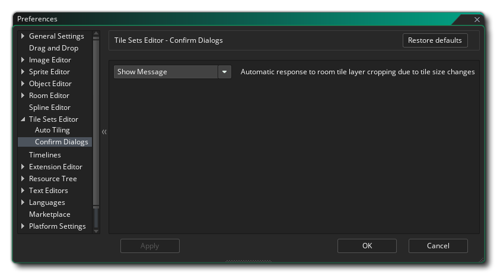

Las Preferencias del editor de Sprite se utilizan para definir cómo se ve y funciona el Editor de conjuntos de mosaicos. La siguiente opción existe para el mosaico automático:
Las preferencias del Editor de conjuntos de mosaicos también tienen una subsección Confirmar cuadros de diálogo: 
La opción disponible aquí controla el mensaje que aparece cuando cambia el tamaño de la celda del conjunto de mosaicos y esto afectará la forma en que se renderizan las capas del mapa de mosaico de la sala (lo que resulta en capas recortadas). De manera predeterminada, se le solicitará que continúe o cancele la operación, y esta opción le permite suprimir este mensaje seleccionando "Aceptar", que continuará con el cambio de celda del conjunto de teselas, independientemente del impacto en las capas de mosaico de la sala. El valor predeterminado es "Mostrar mensaje".